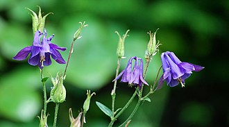
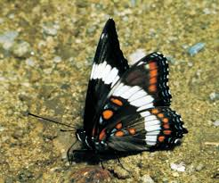
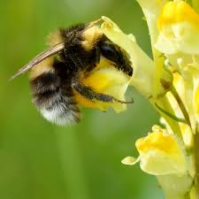

|  |
The genus name Aquilegia comes from the Latin "Aquila", or "eagle"; this is in obvious reference to the spurred, "hook" shapes within the blooms, that many gardeners say resemble an eagle's talons.
Perennial herbs, with woody, erect stock, roots forming thick rhizomes. The basal leaves are compound, 1–3 ternate, blades 3-lobed -partite, and lobes lobulate and obtuse. The cauline leaves are similar to the basal ones, while the upper ones are bract like. The hermaphrodite (bisexual) flowers are terminal to stem and branches. They are usually pentamerous (with five spreading perianth petaloid sepal segments). Five tubular honey-leaves[a] are semi erect with a flat limb and spurred or saccate at the base. The spur is directed backwards and secretes nectar. Stamens are numerous (often more than 50) in whorls of 5, the innermost being scarious staminodes. There are ten membranaceous intrastaminal scales. There are five pistils and the carpels are free.[6][7][8] The fruit has several (five to 15) follicles which are semi erect and slightly connate downwards. These hold many seeds and are formed at the end of the pistils. The nectar is mainly consumed by long-beaked birds such as hummingbirds.[9] Almost all Aquilegia species have a ring of staminodia around the base of the stigma, which may help protect against insects.[10][6][7] Chromosome number is x=7.
Columbines are closely related to plants in the genera Actaea (baneberries) and Aconitum (wolfsbanes/monkshoods), which like Aquilegia produce cardiogenic toxins.[11]
They are used as food plants by some Lepidoptera (butterfly and moth) caterpillars. These are mainly of noctuid moths – noted for feeding on many poisonous plants without harm – such as cabbage moth (Mamestra brassicae), dot moth (Melanchra persicariae) and mouse moth (Amphipyra tragopoginis). The engrailed (Ectropis crepuscularia), a geometer moth, also uses columbine as a larval food plant. The larvae of the Papaipema leucostigma also feed on columbine.[12] Plants in the genus Aquilegia are a major food source for Bombus hortorum, a species of bumblebee. Specifically, they have been found to forage on species of Aquilegia vulgaris in Belgium and Aquilegia chrysantha in North America and Belgium. The bees do not show any preference in color of the flowers.[13]
|  |
|  |
Columbine is a hardy perennial, which propagates by seed. It will grow to a height of 40–50 cm (15–20 in). It will grow in full sun; however, it prefers growing in partial shade and well drained soil, and is able to tolerate average soils and dry soil conditions. Columbine is rated at hardiness zone 3 in the United States so does not require mulching or protection in the winter.[14][15] Large numbers of hybrids are available for the garden, since the European A. vulgaris was hybridized with other European and North American varieties. [16] Aquilegia species are very interfertile, and will self-sow.[17] Some varieties are short-lived so are better treated as biennials. The British National Collection of Aquilegias was held by Mrs Carrie Thomas at Killay near Swansea.[18] Some time during or before 2014 the collection started to succumb to Aquilegia Downy Mildew Peronospora aquilegiicola which was at the time an emerging disease to which the plants had no resistance. By 2018 the entire collection had been lost.[19] Aquilegia can be grown from seeds or rhizomes.[20]
The flowers of various species of columbine were consumed in moderation by Native Americans as a condiment with other fresh greens, and are reported to be very sweet, and safe if consumed in small quantities. The plant's seeds and roots, however, are highly poisonous and contain cardiogenic toxins which cause both severe gastroenteritis and heart palpitations if consumed as food. Native Americans used very small amounts of Aquilegia root as a treatment for ulcers.[21] However, the medical use of this plant is better avoided due to its high toxicity; columbine poisonings may be fatal.[11] An acute toxicity test in mice has demonstrated that ethanol extract mixed with isocytisoside, the main flavonoid compound from the leaves and stems of Aquilegia vulgaris, can be classified as non-toxic, since a dose of 3000 mg/kg did not cause mortality.[22]
The Colorado blue columbine (A. coerulea) is the official state flower of Colorado (see also Columbine, Colorado). It is also used as a symbol of the former city of Scarborough in the Canadian province of Ontario.[23]
Columbines have been important in the study of evolution. It was found that the Sierra columbine (A. pubescens) and crimson columbine (A. formosa) each has adapted specifically to a pollinator. Bees and hummingbirds are the visitors to A. formosa, while hawkmoths would only visit A. pubescens when given a choice. Such a "pollination syndrome", being due to flower color and orientation controlled by their genetics, ensures reproductive isolation and can be a cause of speciation.[24] Aquilegia petals show an enormous range of petal spur length diversity ranging from a centimeter to the 15 cm spurs of Aquilegia longissima. Selection from pollinator shifts is suggested to have driven these changes in nectar spur length.[25] It was shown that this spur length diversity is achieved solely through changing cell shape, not cell number or cell size. This suggests that a simple microscopic change can result in a dramatic evolutionarily relevant morphological change.[3]
There are 130 accepted species